myRadio does not provide any stations to the user. The user must add internet stations to this app. There are various other sites which provide broadcasts of your favorite radio station, some of them are listed below for reference.
Once you have metadata (name, frequency, and media url) to a add a new station, you can follow these steps
Click on user icon to access menu and select 'Create new Station'
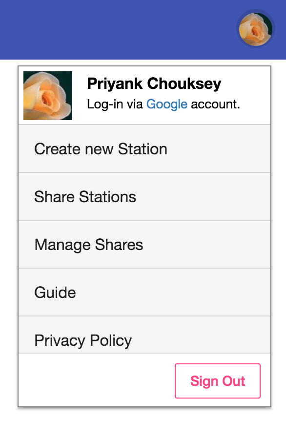
This will open a dialog to create the station.
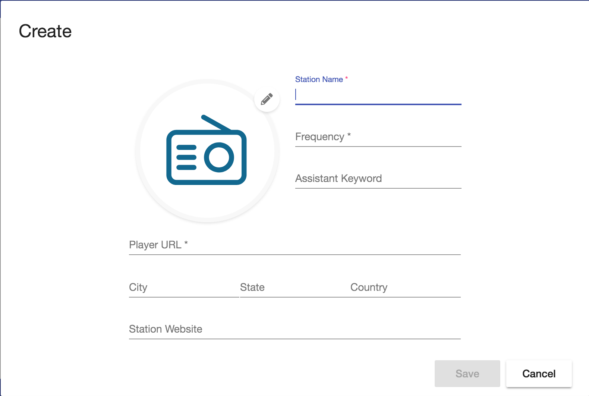
Click 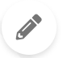 to open picture selector.
Paste a url of the picture from other website (preffered).
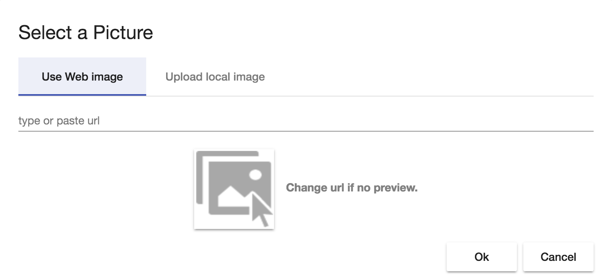
Alternative you can upload your local copy of the station logo.
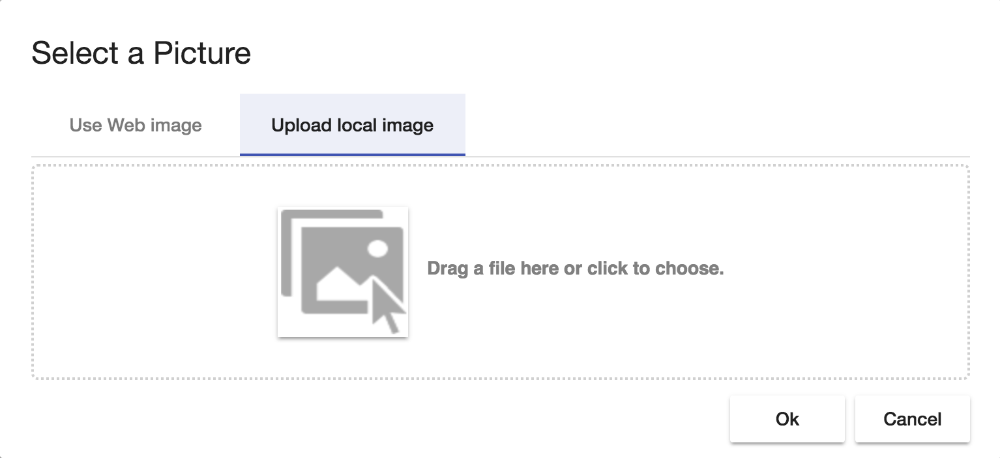
PS: m3u urls are not supported right now due to CORS issue, Work around is to open the m3u in any text editor and copy the url from the m3u list.
Fill as much relevent information you can probide in addition to required fields, this will later help in searching and grouping stations.
Click on save to save this station. The newly created station will appear in your myStation's list.
Once a station is created you can modify it. You can only modify stations created by you, stations shared to you by other user cannot be modified by you.
Click to open context menu.
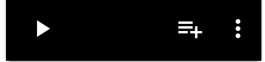
Click on 'Edit Station' menu item. This will open Edit station dialog, modify the station as required and Save.
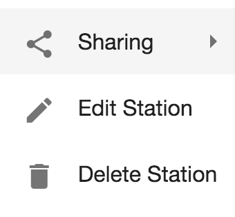
You can only delete stations created by you, stations shared to you by other user cannot be modified by you.
PS: You might have shared the stations with others, deleting the your shared station will delete station for those users as well.
Click to open context menu
Click on 'Delete Station' menu item. This will open a confirmation dialog, confirm Yes in the dialog box.
A station can directly be played by clicking from the station card.
This will add the station at top of your queue and start playing that station. Adding the station to queue is temperory and will be removed when application exits.
When you click on the play button, it will add the station in queue and play it, it is a temperory add to queue which means when you refresh application you will loose that queue. To resolve this you may have to add the station in you persisted queue.
Cick on the icon of the station card.
The icon will get highlighted
To remove the station from queue, click the highlighted icon and it should turn to add queue icon.
All the stations added to the queue will persist and will be available next time when you login.
Once the queue is created, either by using play button or add to queue, you will be able to navigate and play the stations using the player bar.
Click the large play/stop buton to play or stop currently playing station.
Click previous and next icons next to the play button to navigate between stations.
You can also view your current queue by clicking on icon of player bar. This will open the current queue list.
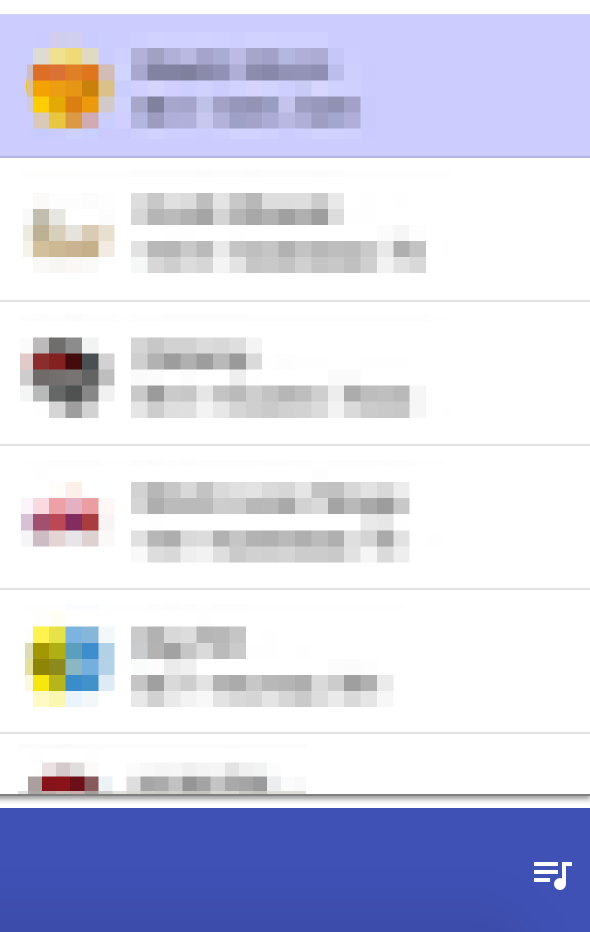
Click any station to start playing.
The app does allow you to share the stations created by you with other users. You can either share a single station or multiple stations in a share.
The share menu can be accessed by clicking on and hover over share menu.
To share a single station select 'Share this staion' from the sharing menu.
To share multiple station, you click on 'Add to share list'. This will add current station to share list and you can perform these steps with as many stations you want to share. When done you should select 'Share all selected' from the same context menu.
You will be presented with a dialog box to complete sharing.
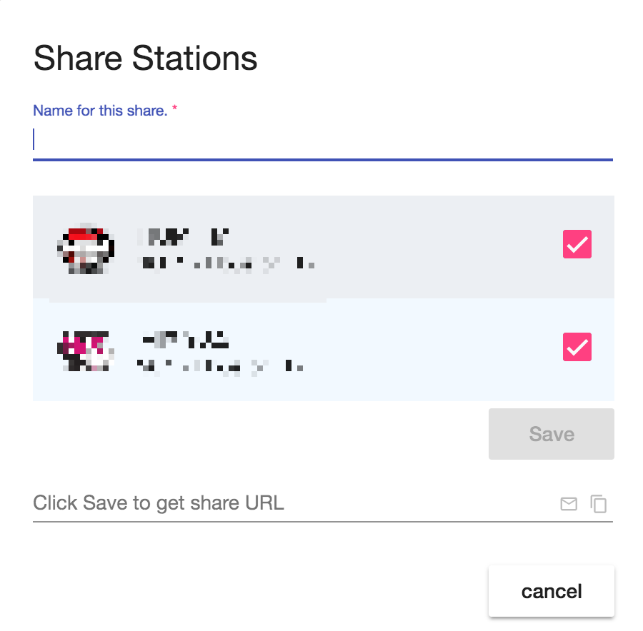
In the dialog provide a name for your share, you may review the stations you are sharing and remove if you want. Once done, hit on save to generate share url.
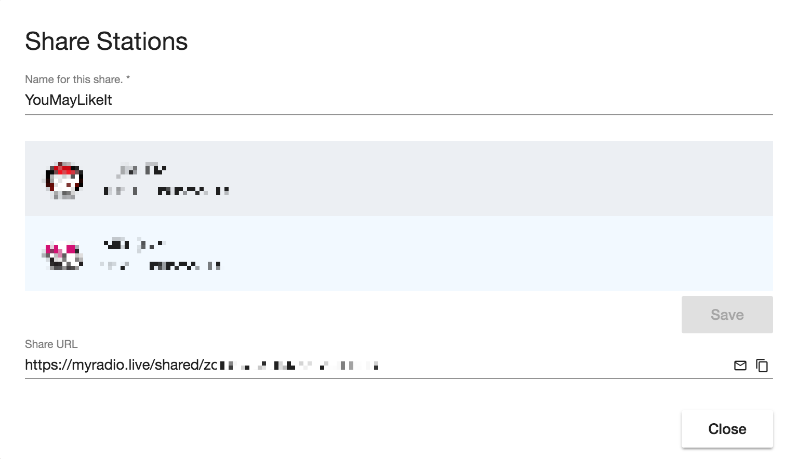
When save is done you can find the share URL. You also have option to send the share url via mail (it will open default mail client in you machine) or copy the url by using the buttons provided on the right of Share URL box.
At time you will get cluttered with many shares and may want to manage them.
PS: Deleting the share will delete all related data and other users, who have your share url, will not be able to import it.
Open the User menu
Click on 'Manage Shares', you will be presented with following dialog.
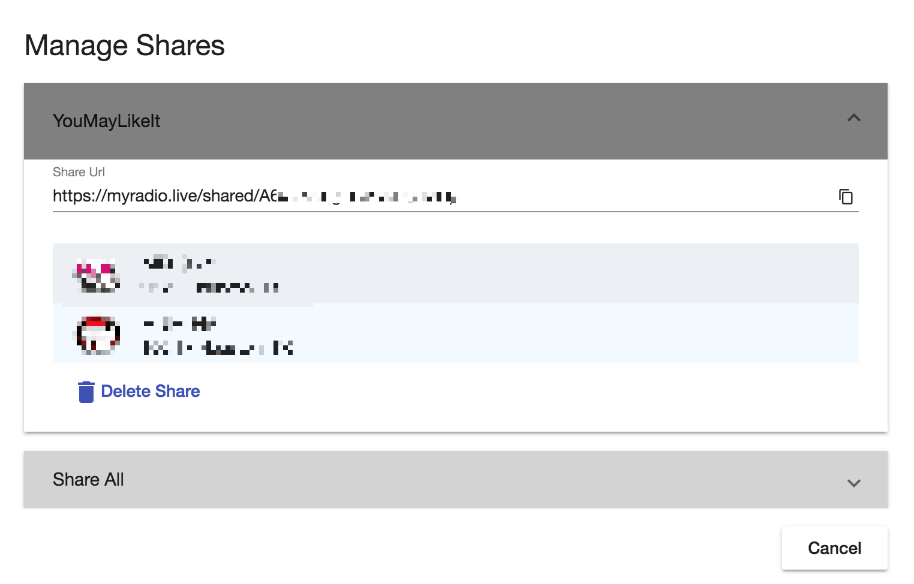
You can browser through all your shares by clicking on share name.
You can click on 'Delete Share' button to delete any perticular share.
You may have received a share over mail or anyother form of communication. When you open the share URL, if you are not already logged the app will ask you to login.
In logged in view you will be presented by following screen to import the share.
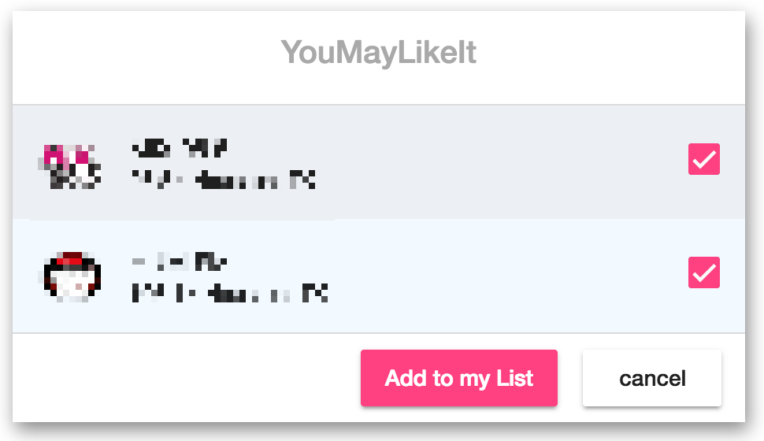
In this screen you can select all or some stations that you would like to add to your list. Once made a choice click on 'Add to my list' and you will be navigated to myStations where you could see the newly imported stations.